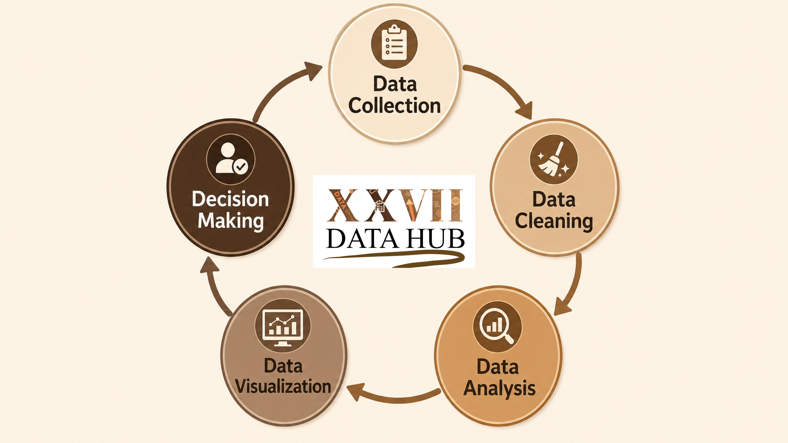
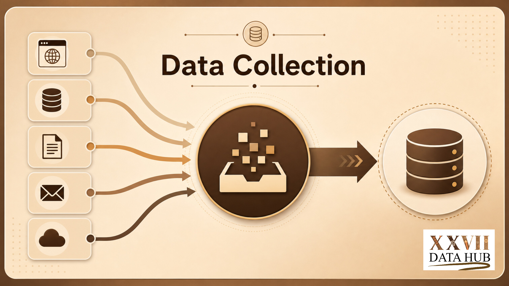
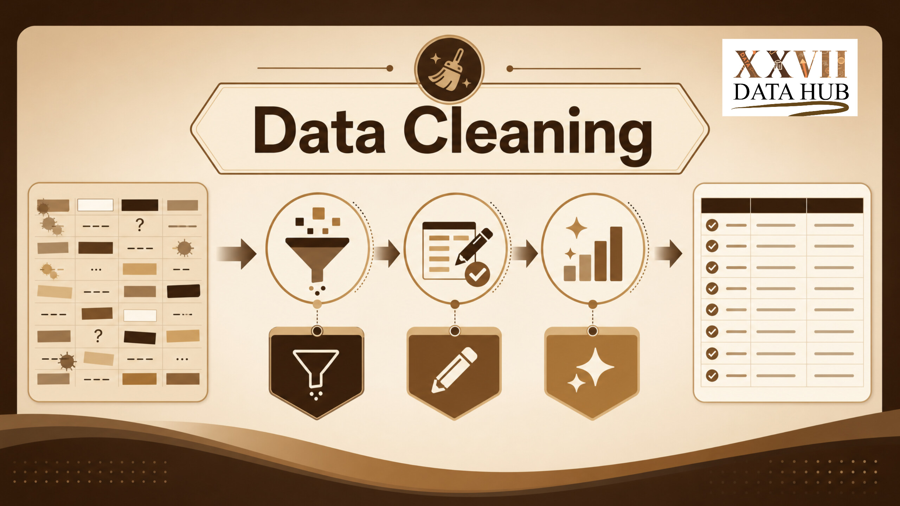
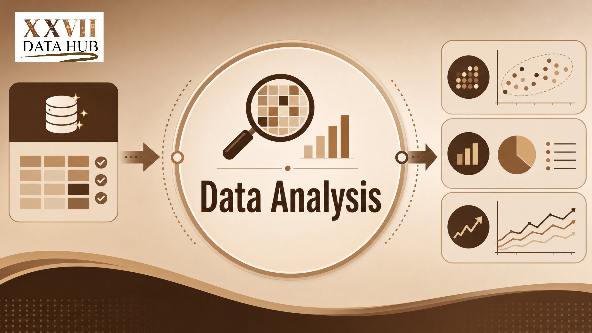
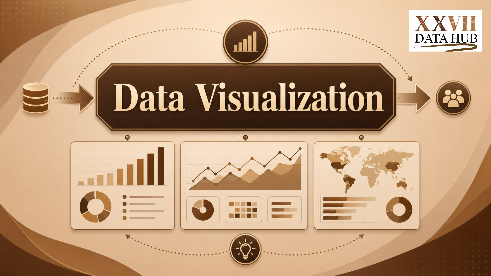
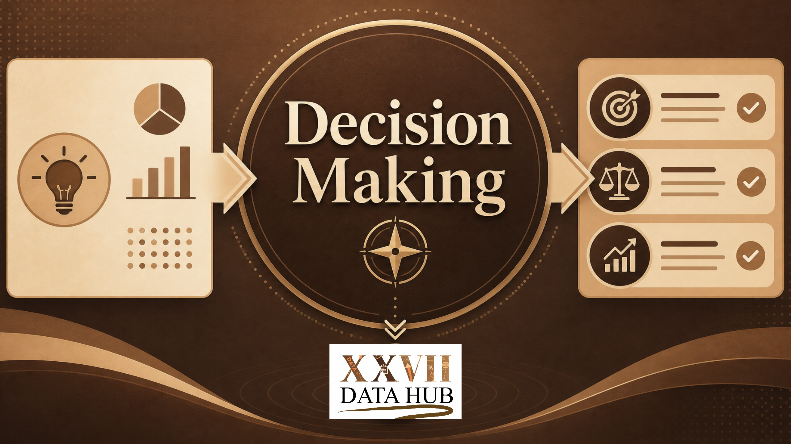

Understanding the Data Cycle
The data cycle is a structured process that transforms raw information into meaningful insights. It helps organizations collect, organize, analyze, visualize, and interpret data for informed decision-making.

The data cycle is a structured process that transforms raw information into meaningful insights. It helps organizations collect, organize, analyze, visualize, and interpret data for informed decision-making.


Data collection is the first stage of the data cycle. Information is gathered from surveys, databases, websites, applications, research studies, and many other sources.

Raw data often contains missing values, duplicates, and inconsistencies. Data cleaning improves accuracy and prepares the dataset for reliable analysis.

Data analysis involves examining trends, relationships, and patterns using tools such as Python, R, Excel, SQL, Tableau, and Power BI.

Visualization transforms complex information into charts, dashboards, and graphs that are easier to interpret and communicate.

The final stage uses insights gained from data to support strategic planning, improve performance, solve problems, and guide policy development.

Without a proper data cycle, organizations risk making decisions based on assumptions rather than evidence. Effective data management improves efficiency, accountability, and innovation.